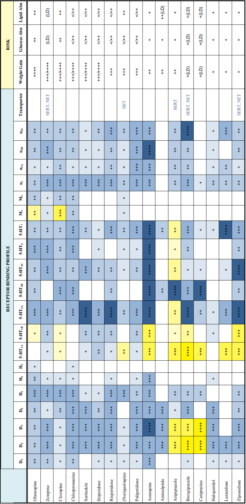

3 정형 항정신병 약물
3.1 명칭에 대한 논란
사물의 이름이나 분류는, 당대 학자들이 약물에 대해 어떤 시각을 지니고 있었는지 암시해준다.[1] 1950년대 이후, 클로르프로마진과 유사 약물들이 갑자기 시장에 도입되자 이들의 공통적 특성을 아우르는 이름이 필요하였다. 이에 tranquilizers, neuroleptics, ataractics, antipsychotics, anti-schizophrenic agents 등 다양한 이름이 사용되기 시작하였다. 실용적 필요성이나 연구자의 개인적인 철학에 의해 붙여진 이 이름들은, 이름이 갖는 임상적, 심리적, 사회적 함의에 대한 별 논의 없이 사용되기 시작하였다. 이중 많은 이름들이 명멸했지만, 오늘날 남아있는 용어는 항정신병 약물(antipsychotic)이라는 이름이다.
가장 먼저 등장한 이름은 major tranquilizer였다. 이 약물들이 조현병 환자의 흥분성을 가라앉힌다는 것이 분명해지자, minor tranquilizers로 흔히 불리우던 안정제/진정제(sedatives)와 구분하기 위해 사용되기 시작하였다.1 그러나 이는 그다지 만족스럽지 못했는데, 왜냐하면 마치 동일한 질병에 사용하는 약물 중에 어떤 것은 좀더 약하고(minor), 어떤 약은 좀더 세다(major)는 인상을 주었기 때문이다. 신경증으로 고생하던 환자가 좀더 센 약을 달라며 major tranquilizer를 원하는 예기치 않은 일들이 발생하기도 하였다.[2] 이후 잠깐 ataractics2라는 용어가 등장하였으나, 이내 tranquilizer라는 용어와 함께 의사들의 뇌리에서 지워지고 말았다.
1 Tranquilizer라는 용어는 스위스의 화학자인 Frederik Yonkman이, reserpine의 효과를 barbiturate와 같은 sedative와 구분하기 위해 사용하기 시작하였다.
2 Ataractic은 그리스어로 “흥분하지 않고 평온을 유지하는”이라는 의미를 갖는다.
클로르프로마진의 임상 시험을 성공리에 이끈 Delay와 Deniker는 어쩐 사연인지 많은 후보 명칭 중에서도 neuroleptic3이라는 용어를 채택하였다. 이 명칭은 약물이 근경직, 진전, 서동증 등 추체외로 증상을 유발한다는 것을 강조하며, 더불어 환자들의 정신적 반응성을 떨어뜨리고 감정적으로 현실과 동떨어지게 만든다는 뜻을 지니고 있었다. [1] 애초에 클로르프로마진의 개발 목적이 과도한 스트레스 반응을 억제하는 것이었으니, neuroleptic 이란 이름은 약물의 목적과 작용 기전을 잘 반영했다고 볼 수 있다. 하지만 부작용을 토대로 이름을 짓는다는 것은 많은 의사들의 반발을 샀다. [3] 당시만 해도 추체외로 증상이 항정신병 효과에 필수불가결하다는 견해가 지배적이었기 때문에 어찌어찌 넘어갈 수 있었지만, 클로자핀이 임상에 도입된 후에는 더 이상 이 이름이 적절하지 않아 보였다.
3 그리스어 neuron (nerve) 과 leptein (grabbing)에서 유래되었으며, “정신의 고삐를 잡는다”는 뜻으로 풀어볼 수 있다.
Neuroleptic 이라는 용어가 사라진 후 잠깐 항조현병 약물(anti-schizophrenic)이라는 이름이 사용되기도 하였으나, 얼마 지나지 않아 항정신병 약물(antipsychotic)으로 대체되었다.4 두 이름 중에서 후자가 채택되었다는 것은 이 계열의 약물이 조현병이라는 질병을 치료하는 것이 아니라, 정신병적 증상이라는 일련의 증상을 가라앉히는 것이라는 점을 시인한 것이라 하겠다.[1] 지난 수십년 동안 항정신병 약물이라는 이름은, 약물이 사용되는 실제 임상 현장과 잘 부합하였고, 조현병을 비롯하여 양극성 장애, 정신병적 우울증 등 정신병적 증상이 등장하는 어떤 곳에서나 잘 어울렸다.
4 Antipsychotic이라는 용어는 캐나다의 정신과 의사 Heinz Lehmann이 1956년 학회에서 처음 사용하였다.[4]
그런데 최근에는 이 용어마저 설자리를 잃고 있다. 비정형 항정신병 약물은 정신병적 증상 뿐 아니라 훨씬 다양한 정신 증상에 사용되어 왔고, 기대보다 훨씬 우수한 성과를 거두었다. 현재 항정신병 약물은 기분 장애, 불안 장애, 강박 장애, 성격 장애, 자폐증, 틱 장애, 식이 장애 등 안 쓰이는 질환군이 없을 정도로 광범위하게 사용된다. 이런 상황에서 항정신병 약물이라는 이름이 갖는 부정적인 어감은 더 이상 어울리지 않는다. 실제로 임상에서 내가 우울증인데 왜 조현병 약을 쓰는가?하고 항의를 하는 환자들을 드물지 않게 볼 수 있다. 이런 현상은 국내 뿐 아니라 전 세계 환자들에게 공통적인 것으로, 그만큼 약물 용도에 기반한 명명체계가 설 자리를 잃었다는 증거이기도 하다.[5]
이미 1957년 국제 정신과 학회(International Congress of Psychiatry)에 참여한 의사들은 약물을 그 효과와 적응증에 따라 분류하는 것이 바람직하지 않다는 것을 논의하고 있었다. 정신과 진단 자체가 불분명하고 계속 진화하는 상황에서, 치료하는 질병을 모델로 이름을 지을 수는 없는 노릇이었다. 그로부터 수십년이 지난 지금, 바야흐로 다양한 작용 기전이 밝혀지고 새로운 적응증을 지니게 된 항정신병 약물은 새로운 이름을 필요로 하게 되었다. 이름에 대한 논란은 의사들 뿐만 아니라 모든 보건 의료 계통 종사자들이 약물들을 어떻게 취급하고 사용할 것인지를 결정하며, 소비자인 환자에게도 선입견과 편견을 불러 일으킨다.
원래 항정신병 약물 뿐 아니라 항생제, 항경련제 등과 같이 약물의 용도를 기반으로 이름을 붙이는 체계를 ATC 코드5라고 부르며, 1976년 세계보건기구에 의해 공식적으로 채택된 후 지금까지 사용되고 있다.[6] 점차 퇴색하여 가는 낡은 명명체계를 대체하기 위해, 2008년에 주요 정신과 학회의 대표들이 모여 태스크 포스를 발족하였다.[7] 이릍 통해 ATC 분류의 대안으로 탄생한 것이 Neuroscience-based Nomenclature (NbN)6이다.
5 Anatomical Therapeutic Chemical (ATC) Classification System
6 NbN의 자세한 정보는 https://nbn2r.com에서 찾아볼 수 있으며, 분류표는 핸드폰 앱으로도 제공된다.
NbN은 약리학적 타겟 및 작용 메커니즘에 대한 최신 과학 정보를 기반으로 한 분류이며, 여기에 더해 1) 인가된 적응증, 2) 효능 및 부작용, 3) 실용적인 메모, 4) 신경 생물학이라는 4가지 부가 정보가 덧붙여져 있다. 현재 130개의 향정신성 의약품이, 10개의 약리학적 타겟과 9개의 작용 모드로 분류되어 있다. 예를 들어 아리피프라졸은, 타겟은 도파민과 세로토닌, 작용 모드는 부분 효현제로 기술되어 있다.
| Pharmacology | Mode of Action |
|---|---|
| Acetylcholine | Channel blocker |
| Dopamine | Enzyme inhibitor |
| GABA | Enzyme modulator |
| Glutamate | Neurotransmitter releaser |
| Histamine | Positive allosteric modulator |
| Melatonin | Receptor agonist |
| Norepinephrine | Receptor antagonist |
| Opioid | Receptor partial agonist |
| Orexin | Reuptake inhibitor |
| Serotonin |
NbN 체계는 용도가 아닌 기전을 통해 분류를 시도함으로써 좀더 과학적이고 유연한 분류체계를 만들어내었다는 의미가 있지만, 지나치게 신경전달물질 수용체에 집중되어 있기 때문에 고정된 틀에 갇혀 있다는 인상을 준다. 또한 수십년 동안 써왔던 약물일 지라도 여전히 새로운 약리학적 기전이 속속 밝혀지고 있기 때문에, 부단한 개정이 이루어지지 않는 한 금새 시대에 뒤쳐질 우려가 있다. 게다가 일부 학자들은, 학회를 좌지우지하는 몇몇 대표들의 합의로 만들어진 체계가 표준으로 자리잡으면, 좀더 독립적이고 창의적인 이론의 탄생을 방해할 것이라 우려하기도 한다.[8,9] 마치 DSM과 ICD 체계가 정신질환에 대해 상상하고 이해하는 방식을 전 세계 공통으로 획일화 시켰듯이, 분류 체계에 있어서도 표준이 진리라는 식의 오해가 자리잡아서는 곤란하다는 지적이다.
3.2 항정신병 약물의 분류
3.2.1 구조에 따른 분류
1990년대 이전, 항정신병 약물은 주로 화학 구조에 따라 분류되었다. 클로르프로마진은 phenothiazine계 화합물로 가운데 thiazine 고리를 갖고 있지만, 전부 세개의 고리를 가지고 있다는 점에서 삼환계 항우울제와 구조가 유사하다. 이에 비해 할로페리돈으로 대표되는 butyrophenone 계 약물은 하나의 벤젠 고리만을 지니고 있어 성상이 다르다. 그 밖에 thioxanthenes 계열, diphenyl butylamine 계열의 약물이 있으나, 차이점보다는 공통점이 더 많다. 정형 약물 시절에는 이렇게 얼마 안 되는 뼈대 구조때문에, 약물을 비교적 명확하게 분류할 수 있었다. 게다가 뼈대 구조를 알면, 약물의 화학적/약물학적 성질을 어느 정도 예상할 수 있었다. 반면 비정형 약물 시대가 도래하면서 기존의 뼈대 구조에 맞지 않는 다양한 신약이 도입되었다. 게다가 구조-성상 관계 역시 명확하지 않아, 화학 구조에 의한 분류는 점점 그 중요성이 떨어지게 되었다.
3.2.2 역가에 따른 분류
저역가/고역가란 약물의 최대 효과가 약하고 세다를 뜻하는 것이 아니라, 평균적으로 치료 효과를 나타낼 수 있는 용량이 어느 정도인지를 기준으로 나눈다. 약물의 통상 용량은 D2 수용체 차단 정도에 비례하는데, 이를 기반으로 저/중간/고역가(low/mid/high potency)로 구분한다. 예를 들어 클로르프로마진/치오리다진 등은 저역가, 할로페리돌/피모자이드 등은 고역가로 분류된다. 저역가 약물은 추체외로 증상/지연성 운동장애 위험이 적은 반면, 항콜린 효과, 진정 효과 및 체중 증가 위험이 더 높다. 반대로 고역가 약물은 그 반대이며, 중간역가 약물은 그 중간 정도이다. 이러한 특성은 비정형 약물에서도 이어지고 있는데, 비록 추체외로 증상 위험은 모든 약이 낮다고 해도 저/중간역가 약물들이 진정 및 체중증가 발생률이 더 높다.
클로자핀과 퀘티아핀은 대표적인 저역가 약물로서, 용량을 높여도 D2 수용체를 40 % 이상 차단하지 않는다. 마치 저역가 약물인 클로르프로마진처럼 항콜린, 항히스타민, 항아드레날린 등 다양한 수용체 시스템을 차단하는 효과를 지닌다. 올란자핀은 대표적인 중간역가 약물로 분류될 수 있다. 용량이 높아지면 D2 차단률이 올라가기 때문에 추체외로 증상이 발생하지만, 그러면서도 항콜린, 항히스타민, 항아드레날린 효과를 갖는다. 리스페리돈과 지프라시돈은 D2 및 5-HT 수용체를 80~90% 이상 차단하면서, 다른 수용체에는 거의 효과가 없는 고역가 약물이다.
| 1세대 | 2세대 | |
|---|---|---|
| 저역가 | Chlorpromazine | Clozapine |
| Thioridazine | Quetiapine | |
| 중간역가 | Perphenazine | Olanzapine |
| Trifluoperazine | Asenapine | |
| 고역가 | Haloperidol | Risperidone |
| Fluphenazine | Ziprasidone | |
| Aripiprazole | ||
| Iloperidone | ||
| Lurasidone | ||
| Cariprazine |
역가에 따른 분류는 약물의 용량을 결정하거나 부작용을 예상하는데 도움을 준다. 그러나 비정형 약물은 정형 약물과는 특성이 달라, 저/중간/고역가 구분만 갖고는 효과와 부작용을 예상하기 어렵다. 또한 사용하는 용량도 임상 경험이 축적되면서 변화되고 있어서, 역가에 따라 비정형 약물을 분류하는 것은 적절하지 못하다.7
7 예를 들어 우울증 환자에게 올란자핀이나 아리피프라졸을 사용할 때, 조현병 환자에게 사용하는 것보다 훨씬 적은 용량을 쓰곤 하는데, 그렇다고 해서 고역가 약물로 분류하기는 곤란하다.
3.2.3 수용체 결합 프로파일에 따른 분류
구조나 역가보다는 수용체 결합 프로파일에 따른 분류가, 효과나 부작용을 예측하는데 좀더 유리하다. 도파민, 세로토닌, 아세틸콜린 등 각 수용체에 대한 결합력 뿐만 아니라, 각 수용체의 아형에 대한 결합력에 따라서도 분류가 가능하다. 예를 들어 특정 도파민 수용체 아형에 선택적으로 결합하는 약물, 부분적 D2 효현 작용을 가진 약물, 도파민 수용체에 영향을 주지 않는 약물, D2/5-HT2 결합의 균형을 이루고 있는 약물 등으로 분류할 수 있다.
하지만 이런 분류도 모두 적절한 것만은 아니다. 예를 들어, 세로토닌/도파민 길항제로 분류된 약물들이 이 두 가지 수용체에만 작용하는 것도 아니며, 서로 다른 군에 속한 약물 사이에도 수용체 프로파일이 서로 중첩되어 있다. 또한 거의 유사한 프로파일을 갖는 약물이 약리학적, 임상적 효과에 차이가 나기도 한다 예를 들어 올란자핀은 무과립구증이 없는 클로자핀이라고 불릴 정도로 클로자핀과 수용체 프로파일이 흡사하지만, 실제 효과는 상당한 차이가 난다.

3.2.4 정형/비정형의 구분
비정형(atypical) 약물이라는 이름은 추체외로 증상을 유발하지 않으면서도 치료 효과를 나타내는 것이 정통 이론에 부합하지 않는다는 의미에서 붙여졌는데, 사실 좀 과장되게 부풀려진 면이 있다. 용량을 올려도 추체외로 증상을 유발하지 않는 약은 클로자핀과 퀘티아핀 뿐이며, 나머지 약들은 용량이 높아지면 예외없이 추체외로 증상을 나타내어 정형 약물과의 차이가 희미해진다. 게다가 치오리다진과 설프라이드는 애초에 추체외로 증상을 잘 일으키지 않기 때문에 비정형 속성을 지녔다고 평가될 수 있으나, 개발 시점이 오래되었기 때문인지 정형 약물로 분류된다. 따라서 화학적으로나 약리학적으로나 소위 비정형이 무엇이다고 정의할만한 명확한 기준은 없는 것 같다.
그래서인지 새로운(novel), 2세대 (second generation)라는 용어를 사용함으로써 정형 약물과의 차별화를 노리기도 한다. 최근에는 아리피프라졸 이후에 임상에 도입된 약물을 3세대 (third generation) 약물이라 하여 기존 세대와 구분하기도 한다. 3세대 약물들은 좀더 세분화된 수용체 아형을 집중 공략하거나, 기능 선택성(6-2-1절)을 지님으로써 전 세대 약물과 구분된다.[11] 여기에 속하는 약물로는 brexpiprazole, cariprazine, lumateperone, pimavanserin, roluperidone 등이 있다. 하지만 이들의 특성은 워낙 제각각이기 때문에, 공통적인 특징을 끄집어내기 어려우며, 그저 최근에 새로 개발된 약물들이란 의미로 이해하면 된다.[12]
3.3 정형 항정신병 약물들
3.3.1 클로르프로마진
클로르프로마진(chlorpromazine)은 최초로 개발된 항정신병 약물로, 미국에서는 Thorazine™ 혹은 Largactil™ 이라는 상품명으로 도입되었다. 클로르프로마진은 D2 도파민 수용체의 효과적인 길항제이지만, 동시에 세로토닌 수용체에도 작용하여 불안과 공격성을 줄여준다. 매우 다양한 수용체에 결합하기 때문에 부작용의 범위가 넓은 편이다. 히스타민 수용체 H1 에 대한 작용은 진정 효과, 구토 방지, 체중 증가를 일으킨다. 무스카린성 아세틸콜린 수용체에 대한 작용은, 입마름, 시력 감퇴, 변비와 같은 항콜린 부작용을 유발한다. α1 아드레날린 수용체 차단은 기립성 저혈압의 원인이다.
클로르프로마진의 생체 이용률은 약 80% 이며, 반감기는 8~33시간이다. 지용성이며, 거의 대부분 혈장 단백질과 결합한다. 주로 간에서 CYP2D6에 의해 대사되는데, 주요 대사 산물은 N-dedimethylchlorpromazine과 7-hydroxychlorpromazine이다. 대사 산물은 대부분 소변으로 빠져나가며, 일부 나머지는 대변으로 배출된다.
클로르프로마진은 다양한 적응증을 지니고 있다. 조현병, 조증에 동반된 정신증, 다양한 원인에서 기인한 이차적 정신병 등, 정신병적 증상에 대해 진단불문하고 사용할 수 있다. 꼭 정신병적이지 않더라도 충동성 및 공격성 조절에 사용하며, 소아-청소년의 과잉 행동, 공격성, 폭발적 행동, 흥분 행동 조절에도 사용이 승인되었다. 메스꺼움과 구토 치료에 도움이 되며, 난치성 딸꾹질 치료에도 사용된다. 여기까지 열거한 승인받는 적응증 이외에도 많은 오프라벨8 용도가 있다. 실제 임상에서는 편두통, 불면증, 심한 가려움증, 마취 전 보조제로도 흔히 사용된다.
8 오프라벨(off-Label prescription): 규제당국이 허가한 범위 이외의 적응증, 용량, 투여 경로 등으로 처방하는 사례를 뜻한다. 약물을 반드시 허가 범위 내에서만 사용할 수 있는 것은 아니지만, 점점 근거중심의학이 강조되는 시대적 분위기에서, 유효성과 안정성이 입증되지 않은 용도로 약물을 사용하는 것은 환자에게 피해를 줄 수 있다.
정제와 주사제를 비롯하여, 액상, 좌약 등 다양한 제형이 있으나, 우리나라에는 정제와 주사제만 도입되었다. 과거에는 클로르프로마진 주사제가 급성 환자의 흥분을 가라앉히거나, 약물 복용을 거부하는 환자에게 유용하게 사용되었다. 그러나 졸림, 저혈압 등의 문제와 함께 특히 노인에서는 낙상 위험성이 높아진다. 특히 주사제는 갑작스레 심근의 수축력을 약화시키고 혈관을 확장시키며, 부정맥을 일으킬 수 있기 때문에 심혈관 질환이 있는 환자에게는 사용하기 어렵다.[13]
클로르프로마진은 추체외로 부작용과 지연성 운동장애를 덜 일으키지만, 기타 부작용이 워낙 많아 할로페리돌이 등장한 이후에는 과거만큼 널리 사용되지 않는다. 게다가 과량복용 시 저혈압, 호흡 억제, 쇼크로 생명을 위협할 수 있으며, 자살 목적으로도 종종 사용되었다.[14] 독특한 부작용으로 광과민성을 유발하는데, 고용량을 오래 사용한 환자들은 피부와 안구가 푸른색이 도는 검은 빛으로 변색된다.
3.3.2 할로페리돌
할로페리돌(haloperidol)은 1958년에 Janssen9이 합성에 성공했고 1967년에 미국 FDA의 승인을 받았다. 보다 선택적인 D2 길항제로, 클로르프로마진에 뒤따르던 다양한 부작용들에서 자유로울 수 있었다. 저혈압, 쇼크 등을 걱정해야만 했던 클로르프로마진과는 달리, 훨씬 고용량에서도 환자의 생체 징후에 영향을 주지 않았다. 클로르프로마진 이후 가장 성공적인 항정신병 약물로 자리잡았으며, 비정형 약물이 도입된 이후에도 여전히 일정 수준 이상의 시장 점유율을 유지하고 있다.[15]
9 Paul Janssen (1926~2003): 벨기에에서 가족 기업으로 소박하게 경영해오던 제약회사를 물려받아, 전세계적으로 손꼽히는 글로벌 제약사인 얀센 사로 성장시킨 입지전적인 인물
그러나 도파민 수용체를 집중적으로 차단하는 만큼, 추체외로 증상과 지연성 운동장애의 위험은 보다 커졌다. 할로페리돌의 도입 이후 급성 근긴장이나 좌불안석에 대한 의사들의 관심이 새삼 높아지기도 하였다. 드물긴 하지만 신경이완제 악성증후군(9장) 역시 할로페리돌을 사용했던 환자에서 첫 사례가 생겼다.10
10 신경이완제 악성증후군 (neuroleptic malignant syndrome): 1960년 할로페리돌은 사용하던 프랑스 환자에서 처음 보고되었으며, 이 명칭은 사례를 보고한 저자들이 사용한 syndrome malin des neuroleptiques을 영어로 번역한 것이다.[16]
D2를 제외한 다른 수용체에 결합력이 약하기 때문에 진정, 체중 증가, 항콜린 부작용을 일으킬 가능성이 적어졌다. 그러나 과량 복용했을 경우에는 여전히 저혈압, 호흡 억제, 쇼크가 올 수 있다. 안전한 약물이라는 인식이 오히려 지나치게 높은 용량을 사용하는 관행을 불러일으켜, 환자에게 위험을 가져오기도 하였다.11
11 할로페리돌의 유효 용량은 4~20mg/day 정도이다. 그러나 1980년대까지만 해도 100~200mg/day 가까이 사용하는 일이 빈번했다.[17]
할로페리돌은 조현병의 급성기 치료 및 유지 치료에 승인되었으며, 그 밖에 틱, 투렛 증후군과 폭발적이고 공격인 행동을 보이는 소아-청소년에게 사용이 승인되었다. 경구 할로페리돌의 생체 이용률은 60~70%이며, 반감기는 약 12–38시간이다. 혈장 단백질 결합률은 90% 정도이다. 간에서 glucuronidation에 의해 대사된 뒤 주로 CYP3A4에 의해 산화된다. 투여 용량의 약 1% 만이 변하지 않고 소변으로 배출된다.
할로페리돌 역시 다양한 오프라벨 사용처가 있다. 비록 승인은 받지 못했지만 양극성 장애 치료에 널리 사용되며, 특히 섬망과 행동 장애를 보이는 치매에 특효약으로 사용된다.12 현재 알약을 비롯하여, 액상 형태, 근육 및 정맥 주사, 그리고 장기 지속형 주사13로 제공된다. 할로페리돌 주사제는 큰 인기를 끌었으며, 급속 진정(rapid tranquilization)에 없어서는 안 될 필수 의약품이 되었다.
12 할로페리돌은 항콜린 효과가 없기 때문에 섬망 환자에게 효과적이며, 중환자실에서 발생하는 섬망 사례의 75~80%에서 사용된다. 치매 환자가 보이는 정신병적 증상에서도 널리 사용되어 왔지만, 다른 모든 항정신병 약물과 함께 치매 환자의 사망률을 높일 수 있기 때문에 사용을 자제해야 한다.
13 소위 데포 주사제 (depot injection)
3.3.3 퍼페나진
클로르프로마진이 aliphatic phenothiazines이라면, 퍼페나진(perphenazine)은 piperazine이 곁가지로 붙은 piperazinyl phenothiazine이다. Piperazine 곁가지는 좀더 D2 결합력을 강화하고, 다른 수용체에 대한 효과를 감소시킨다. 그래서 대표적인 중간역가(medium-potency) 약물로 꼽힌다. 퍼페나진 또한 D2 수용체를 차단하여 정신병적 증상을 감소시키며, 항도파민, 항히스타민, 항콜린 효과에 힘입어 메스꺼움과 구토, 멀미현상을 줄여준다.
퍼페나진도 엄연한 항정신병 약물이지만 그 효과는 좀 애매하다. 실제 임상에서는 조현병 보다는, 초조 증상이 심한 우울증이나 불안 장애에 저용량으로 널리 사용되어 왔다. 비정형 약물 시대에는 우울증 환자에게 항정신병 약물을 사용하는 것이 보편화되었지만, 이전 시대에는 퍼페나진이 그 역할을 대신해왔다고 해도 과언이 아니다. 퍼페나진과 플루옥세틴 조합은 과거 정신병적 우울증의 가장 효과적인 치료법이었다.[18]
퍼페나진은 항정신병 효과가 강력하지는 않았지만, 부작용 없고 순한 약이라는 인식이 강해 그리 심하지 않은 조현병 환자의 유지 치료에 널리 사용되었다. 그러던 중 2000년대 초반에 시행된 CATIE 연구14에서 비정형 약물과 효과와 안정성 면에서 큰 차이를 보이지 않는데다가, 비정형 약물에 비해 훨씬 경제적이었다는 것이 밝혀져 재조명되었다.[19,20] 퍼페나진 역시 정제 및 주사 제형으로 제공되나, 한국에서는 정제만이 보급되었다.
14 Clinical Antipsychotic Trials of Intervention Effectiveness (CATIE): 미국 국립보건원의 지원 하에 시행된 다기관 임상 연구로서, 당시 새로 도입된 비정형 항정신병 약물과 정형 약물(퍼페나진)의 효과와 안정성을 무작위 배정 이중 맹검 시험을 통해 비교하였다.
퍼페나진의 반감기는 8~12시간으로 하루 두번 복용하며, 클로르프로마진과 동일하게 간에서 CYP2D6에 의해 분해된다. 플로욱세틴을 비롯한 SSRI들이 보통 CYP2D6에 의해 분해되기 때문에 함께 사용할 때는 용량 조절을 고려해야 한다.
퍼페나진도 다른 모든 항정신병 약물과 마찬가지로 고용량에서 추체외로 증상을 일으킬 수 있으며, 체중 증가, 진정, 시야 흐림, 변비 및 구강 건조를 유발할 수 있다. 그러나 클로르프로마진과 할로페리돌이 양쪽 극단이라면, 퍼페나진은 부작용 특성도 두 약물의 중간 정도라고 할 수 있다.
3.3.4 설피라이드
설피라이드(sulpiride)는 치환된 벤즈아미드(substituted benzamide)이며, 레보설피리드(levosulpiride)는 설피라이드의 광학 이성질체이다. 이들은 훨씬 후에 개발된 비정형 항정신병 약물인 아미설프라이드와 화학적 및 임상적 유사성을 갖는다.
할로페리돌이 D2에 집중적으로 결합한다고 해도, D1~5까지의 모든 도파민 수용체 아형, 세로토닌 수용체, 그 밖의 아드레날린, 콜린 수용체에 결합할 수 있었다면, 설피라이드는 좀더 선택적으로 D2, D3, 5-HT1A 수용체에 결합한다. 그래서인지 1966년에 개발된 오래된 약물이지만 예로부터 비정형성이 강조되어 왔고, 음성/우울 증상에 효과가 있는 것으로 인정되었다. 이런 효과의 배후에는 D3에 대한 작용, 혹은 시냅스전 도파민 자가 수용체를 차단하여 도파민 활성을 올리는 작용이 있을 것으로 생각되었다. [21,22]
이러한 비정형성 때문인지, 설피라이드는 조현병 치료는 물론, 주요우울증에서 항우울제와 함께 자주 사용되었다. 그 밖에 틱/뚜렛 장애를 비롯하여, 특이하게도, 장 운동 이상증, 과민성 대장증상 및 십이지장 궤양 치료에도 사용되었다.
설피라이드는 95%가 대사되지 않은채 소변으로 배설되며, 혈장 단백질에 결합하는 비율도 40% 미만이다. Cytochrome에 의해 대사되지 않기 때문에, 약물 상호 작용도 거의 없는 편이다. 반감기는 7~8시간으로 하루 두번 복용한다. 도파민, 세로토닌 수용체 이외에는 거의 결합하지 않기 때문에 운동 부작용 외에는 부작용이 적은 편이지만, 고용량 투여시 신경이완제 악성증후군을 일으킬 수 있다.
3.3.5 록사핀
록사핀(loxapine)은 1975년 경 임상에 도입된 dibenzoxazepine 계열 항정신병 약물로서, 구조적으로는 클로자핀의 뼈대인 dibenzodiazepine과 유사하다. 정형 약물로 분류되지만, D2 에 대한 길항작용 이외에도, 세로토닌 재흡수를 억제하며 5-HT2A 수용체에 높은 친화성을 보인다. 이 때문에 비정형 약물의 선조 격으로 취급된다.[23] 클로자핀과 구조가 유사한데다가, 세로토닌/도파민 길항제이고, 게다가 무과립구증의 위험도 없었기 때문에 잠깐 동안 상당한 주목을 받았다. 록사핀은 할로페리돌과 리스페리돈을 잇는 약물로 여겨지며, 50mg/day 이하의 저용량에서는 비정형을 띠지만 그보다 용량이 높아지면 추체외로 증상과 지연성 운동장애의 위험이 상당히 높아지기 때문에 진정한 비정형 약물이라고 보기는 힘들다.[24]
록사핀의 혈장 단백질 결합율은 96.6% 이며, 간에서 N-demethylation을 통해 사환계 항우울제인 아목사핀으로 대사된다. 경구 제제의 반감기는 4시간 밖에 안 되지만 반감기가 긴 활성 대사 산물이 있어서 하루 두번 복용한다. 대사과정은 매우 복잡하며, CYP1A2를 비롯하여 CYP2D6, 3A4가 관여한다. 대사산물인 아목사핀15은 매우 효과가 빠른 항우울제로 알려져 있는데다가 항정신병 효과도 유지하고 있기 때문에, 록사핀이 조현병 환자의 우울 증상을 개선하는데 일조하고 있다. 물론 록사핀 자체도 노르아드레날린과 세로토닌의 재흡수를 억제하기 때문에 항우울 효과를 지니고 있다.
15 아목사핀 (amoxapine): 독자적인 항우울제로 사용되며, 우리나라에서는 아디센®이라는 상품명으로 판매되고 있다.
많은 장점에도 불구하고 록사핀은 시장에서의 어중간한 위치때문에 그리 활발하게 사용된 편은 아니었다. 그러던중 미국의 Alexza 제약은 흡입형 록사핀을 개발하여 Adasuve®라는 상품명으로 판매하기 시작하였고[25], 이는 2012년에 성인의 조현병 또는 양극성 I 장애와 관련된 초조 증상의 급성 치료 목적으로 미국 FDA의 승인을 받았다.16 흡입형 록사핀은 근육 주사보다도 효과가 빠르기 때문에. 협조적이고 공격적이지 않은 환자라면 급속 초조 증상을 치료하는데 효과적이다.
16 우리나라에서는 2019년에 코오롱 제약이 아다수브 흡입제라는 이름으로 식약처의 허가를 받았으나, 널리 사용되지는 않고 있다.
3.3.6 몰린돈
몰린돈(molindone)은 dihydroxyindole계의 정형 항정신병 약물로, 1974년 Moban®이라는 상품명으로 판매되기 시작하였다. 화학구조적으로 기존의 항정신병 약물과는 전혀 다르며, 작용 기전도 자세히 알려져 있지 않으나, D2 및 5-HT1A,2A에 결합하는 것으로 알려져 있다.
몰린돈은 널리 쓰여지는 약은 아니었으나, 체중 증가를 일으키는 대부분의 항정신병 약물과는 달리 오히려 체중을 감소시키는 효과를 보인다.[26] 이 때문에 체중 관리가 중요한 환자들에게 종종 사용되곤 하였다. 하지만 이마저도 2010년에 생산과 판매가 중단되면서, 이제는 완전히 잊혀진 약이 되었다.
3.3.7 피모자이드
피모자이드(pimozide)는 diphenylbutyl piperidine 계열로 1963년 얀센 사에 의해 개발되었다. 할로페리돌과 비슷한 수용체 결합 프로파일을 가지고 있지만, D2 에 보다 선택적이며, 용량 대비 수용체 차단 정도를 따지면 할로페리돌보다 훨씬 고역가이다.
정형 약물 시절에도 이미 클로르프로마진과 같이 다양한 수용체를 건드리는 약물과 피모자이드, 설피라이드와 같이 도파민 수용체만 선택적으로 차단하는 약물 사이에, 어느 쪽이 더 효과적인지에 대한 논란이 거세었다. 당시만 해도 D2 이외 수용체에 대한 효과는 오로지 부작용만 낳는다는 견해가 지배적이었기 때문에, 피모자이드와 같은 순수 D2 차단제가 조현병 치료제 개발의 미래라고 인식되었다. 더군다나 피모자이드는 진정 작용이 적었기 때문에 음성 증상을 주로 보이는 환자에게도 널리 사용되었다. 반면 다른 쪽에서는 피모자이드의 작용이 특정 수용체에 너무 국한된 나머지, 망상 장애나 틱/뚜렛 장애 등에는 효과적일지 모르지만, 조현병과 같이 증상 자체가 광범위한 질환에는 효과가 제한될 것이라는 견해를 보였다.
논란에도 불구하고, 피모자이드는 용량이 올라가면 심한 추체외로 증상을 일으켰기 때문에 고용량을 필요로 하는 급성기 조현병 환자보다는 만성기에 접어들어 유지 치료가 필요할 때 주로 사용되었다. 게다가 칼슘 채널 차단 작용때문에 다른 칼슘 채널 차단제 복용 환자 혹은 부정맥의 과거력이나 가족력이 있는 환자에서는 사용이 금지되었다. 항정신병 약물이 QTc 구간을 늘리고, 지나치면 Torsade de Pointes를 일으킬 수 있다는 것도 피모자이드를 통해 알게 된 사실이다.
흥미롭게도, 피모자이드는 망상성 기생충 감염증17을 비롯한 건강염려증적 망상증에 한동안 사용되어 왔으며[28], gabapentin 등이 보급되기 전에 신경병성 통증에도 흔히 사용되었다.[29] 또한 STAT518 억제제로서 암세포의 분열과 이동을 막는 성질이 있어 항암제의 보조치료제로도 활용되고 있다.[30]
17 망상성 기생충 감염증 (delusional parasitosis, delusional infestation): 피부 아래에 벌레가 기어간다면서 심한 가려움증을 호소하는 사례. 2001년부터 2010년 사이에 미국 피부과 학회에서 열띤 논쟁이 있었다. 환자들은 미지의 기생충에 감염되었다고 믿으며, 피부 밑에 벌레가 기어다니고 정체 불명의 실같은 물질이 피부에서 빠져나온다고 호소한다. 프랑스의 구전 설화에서 이름을 따 Morgellons syndrome이라고 부르기도 한다.[27]
18 Signal transducer and activator of transcription 5 (STAT5): STAT5A와 STAT5B의 두가지 단백질을 지칭한다. 활성화되면 세포 성장과 분열을 자극하며, 몇 가지 암세포에서 통제를 벗어나 있는 것이 발견된다. STAT5의 활성을 억제하는 것은 전망이 밝은 암치료 전략으로 손꼽히고 있다.
3.3.8 치오리다진
치오리다진(thioridazine)은 piperidine phenothiazine 계열의 약물로서 클로자핀을 개발했던 Novartis 제약에 의해 개발되었다. 치오라다진은 클로르프로마진보다도 추체외로 증상을 일으키는 위험이 낮다. 진정 작용이 매우 강하기 때문에, 수면 유도 목적으로 사용되기도 하였다. 큰 특징은 없는 약으로 기존 약물에 효과를 보이지 않을 때 2차 선택 약물로 사용되곤 하였으며, 치오리다진 단독으로 조현병 치료를 행하는 사례는 많지 않았다.
가장 중요한 문제는 QTc 구간의 증가였고, pimozide와 마찬가지로 Torsade de Pointes의 위험을 용량 의존적으로 높였다. 게다가 pimozide와는 달리 항콜린 효과가 강하고, 혈압 강하 효과도 있었기 때문에, 심혈관계 기능이 좋지 않은 환자에서는 절대로 써서는 안되는 약이 되었다. 이외에도 망막세포변성증19을 일으켜 시력을 저하시키기 때문에 안과적 점검이 필요하다.[31] 위험한 부작용들 때문인지, 2005년에 생산이 중단되었다.
19 망막세포변성증 (pigmentary retinopathy): 망막세포에 색소가 침착하면서 점차 광수용체의 기능이 떨어지는 유전성 질환. 원래는 유전질환이지만, 말라리아 치료제인 hydroxychloroquine과 더불어 클로르프로마진, 치오리다진에 의해 후천적으로 생길 수 있다.